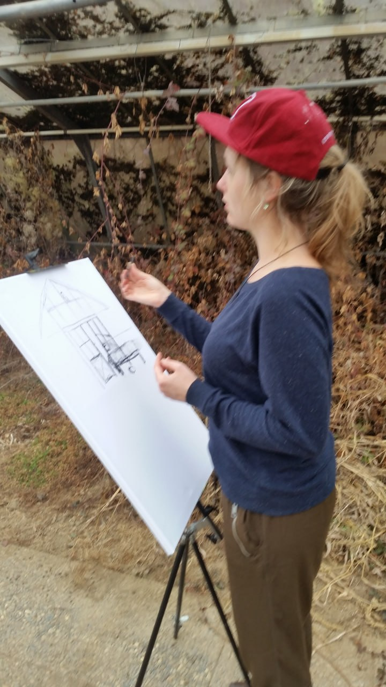
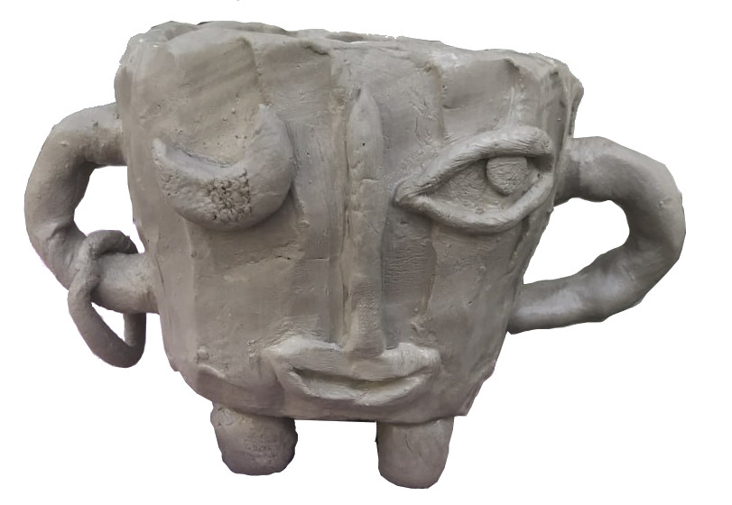

Hier findest du einen Raum für alle deine
Gefühle in jeder Lebenssituation.
Ich biete dir unterschiedliche
Möglichkeiten und Angebote um deinen
eigenen kreativen Ausdruck zu finden,
neue Perspektiven einzunehmen und
dich zu transformieren.
Dazu brauchst Du keinerlei Vorerfahrung.
Melde dich ganz unverbindlich!
Ich freue mich auf dich 😊
Meine Angebote


Testspiel
Hallo, du
Lust auf ein kleines Kennenlernspiel?
Magst du mir deine Lieblingsfarbe verraten?
Ich verspreche dir, anhand dieser etwas über dich herausfinden und erzählen zu können!
Eigenschaften:
Assoziationen:
Na, du?
 Geht's dir grade auch so bescheiden?
Bist du auch so ausgelaugt und erschöpft?
Geht's dir grade auch so bescheiden?
Bist du auch so ausgelaugt und erschöpft?
Fühlst du dich manchmal ungesehen und/oder übergangen?
Vielleicht sogar ausgeschlossen oder angegriffen?
 Bist du irgendwie so taub oder einfach nur noch richtig sauer und genervt?
Bist du irgendwie so taub oder einfach nur noch richtig sauer und genervt?
Probierst du vielleicht sogar, das vor Freunden, Kollegen oder der Familie zu verstecken?
Fühlst du dich alleine gelassen?
Keine dieser Fragen möchte man wohl auf den ersten Blick mit “gut” oder “angenehm” bewerten.
Trotzdem kannst du dir sicher sein, dass ein Großteil unserer Gesellschaft sie mit einem “Ja”
beantworten würde.
Wir alle leiden mehr oder weniger, lauter oder leiser an den Symptomen unserer Zeit.
Jede:r auf seine ganz eigene Weise.
 Und manchmal bieten genau diese unangenehmen Zustände eine große Chance, die man in dem
Moment selbst noch gar nicht erkennen kann.
Und manchmal bieten genau diese unangenehmen Zustände eine große Chance, die man in dem
Moment selbst noch gar nicht erkennen kann.
Die Chance sich und damit die Welt neu zu erfinden.
Daran möchte ich mit dir in meinen Kursen arbeiten und dich ganz aktiv dabei unterstützen, dein
Leben nicht nur “überstehen” zu müssen,
sondern deine ganz persönliche Welt entdecken und
gestalten zu dürfen.
Ohne dabei etwas zu müssen, aber endlich mal wirklich alles zu dürfen.
Denn die meisten unserer “Probleme” sind nämlich lösbar,  indem du erstmal wieder richtig zu
dir findest und dabei etwas schaffst, was einfach nur dir gehört und auch nur du verstehst.
indem du erstmal wieder richtig zu
dir findest und dabei etwas schaffst, was einfach nur dir gehört und auch nur du verstehst.
Und mit ein bisschen Unterstützung, bekommst du dann genau an diesem Ort zusätzlich noch
ein paar ganz neue und andere Blickwinkel auf deine Welt.
Lass uns gemeinsam Zaubern lernen!


„Kunst wäscht den Staub des Alltags von der Seele."Pablo Picasso

Hey, Ich bin Lisa und seit ich mich erinnern kann immer am werkeln.Große und kleine Projekte - egal ob im Wald, am Computer, auf der Leinwand, an der Drehscheibe, mit dem Schnitzmesser oder dem Webrahmen…
meditativ vertieft, chaotisch verschmiert oder kommunikativ im gemeinsamen Austausch - Kreativität und „Zauber“ ist für mich immer und einfach überall sichtbar.
Nach vielen Jahren in der Kinder- und Jugendarbeit habe ich mich deshalb dazu entschieden,
den für mich wichtigsten und heilsamsten Aspekt meines Wirkens zu priorisieren und so barrierefrei wie möglich für uns alle zugänglich zu machen.
Ich möchte unserer Kreativität und Individualität den Raum und die Wertigkeit im Zeitgeschehen verschaffen, den sie meiner Meinung nach verdienen.
Außerdem glaube ich, dass wir beides eben auch unbedingt brauchen um gerade in schwierigen und entfremdeten Zeiten zu unserem natürlichen und „gesunden“ Selbst zurück finden zu können.

Denn dadurch kann dort wo es dir vielleicht gerade daran mangelt, auch wieder Antrieb, also Energie frei gesetzt werden, die es dann nur noch zu stärken und zu festigen gilt.Denn jedes deiner Gefühle ist bedeutsamer als du vielleicht denken magst…
Und mal ehrlich, was gibt es auch Wichtigeres und Heilsameres in der Welt als Liebe, Kunst und Schönheit ?! 🙂
 Während Ausbildungen und Studium durfte ich mich bereits innerhalb verschiedenster pädagogischer, therapeutischer und künstlerischer Methodiken und Materialien ausprobieren -
Während Ausbildungen und Studium durfte ich mich bereits innerhalb verschiedenster pädagogischer, therapeutischer und künstlerischer Methodiken und Materialien ausprobieren -
zeigen und weitergeben möchte ich hier jedoch vor allem die Erkenntnisse und Erfahrungen aus der Praxis meines ganzheitlichen Lebens,
die ich innerhalb unterschiedlicher, hilfreicher Programme selbst für uns zusammengefasst habe.
Um dabei wirklich Wachstum und Entwicklung ermöglichen zu können, soll das hier ein freiheitlicher Raum sein und bleiben,
in dem du selbst ganz unabhängig deine Termine, Bedürfnisse und Wünsche gestalten kannst.
Während ich dich sehe, entsprechend auf deinem Weg begleite, unterstütze und dir an die Hand gebe was du gerade brauchst -
genau so, wie es eben speziell für uns beide funktioniert.
Indem wir zusammen deinen ganz eigenen Ausdruck für deine ganz individuelle Situation finden und ihn uns aus verschiedenen Blickwinkeln gemeinsam anschauen und transformieren.
Teamwork also 😉 - alles darf und nichts muss!
Wenn du möchtest, schau oder klingle doch einfach mal ganz unverbindlich und kostenlos bei mir durch.
Hier gibt es einen Raum für jedes (!) menschliche Gefühl, jede Perspektive und jede Stimmung.
Und wenn du möchtest auch innerhalb einer Community.
Ich freue mich sehr auf dich !
Kontakt
Bitte gib eine gültigen Text ein.
Bitte gib eine gültige E-mail-adresse ein.
Bitte gib eine gültigen namen ein.